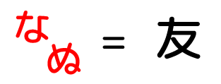
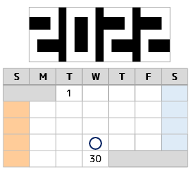
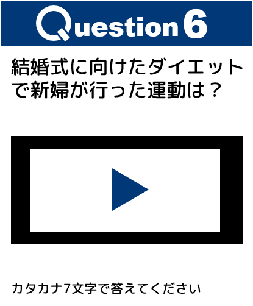

問題
以下の問題を解いてキーワードを集め
キーワードの指示に従ってください
問1


問1 - ヒント1
「た」と「ろ」を置き換えて考える
問1 - ヒント2

問1 - ヒント3
ひらがなをカタカナに
問1回答：
問2

問2 - ヒント1
年は白い部分に着目
問2 - ヒント2

問2 - ヒント3

問2 - ヒント4
年と形からカレンダーで当てはまる月を探し、記号のある場所の年月日が答え
問2回答：
問3

問3 - ヒント1
それぞれの記号を数字に変換して計算する
問3 - ヒント2
今は何階？
問3 - ヒント3
手の形が表している数は？
問3 - ヒント4
今は何問目？
問3 - ヒント5
今は何月？
問3回答：
問4

問4 - ヒント1
xxxx
問4 - ヒント2
ヒント2xxxx
問4回答：
問5

問5 - ヒント1
招待状を確認しよう
問5 - ヒント2
問5 - ヒント3
ミンチ → ランチ
問5 - ヒント4
音符の上の文字を下の文字に置き換える
問5回答：
問6

問6 - ヒント1
xxxx
問6 - ヒント2
ヒント2xxxx
問6回答：
キーワード問題
キーワードの解読 - ヒント1
問題を全て非表示にすると閃くかも
キーワードの解読 - ヒント2
縦読み
キーワードの解読 - ヒント3
キーワードを右から縦読みすると「むっつのゆびわをさがして」になるため
キーワードの指示は六つの指輪を探すこと
キーワードの指示 - ヒント1
探す対象は6つで問題も6つということは…
キーワードの指示 - ヒント2
1つ目：Questionに注目
キーワードの指示 - ヒント3
2つ目：拡大してよく見ると…
キーワードの指示 - ヒント4
3つ目：結婚指輪はどこにつける？
キーワードの指示 - ヒント5
4つ目：改行に違和感
キーワードの指示 - ヒント6
5つ目：隠していない
キーワードの指示 - ヒント7
6つ目：指輪を英語にすると？
最終問題

最終問題 - ヒント1
指輪は問題に対応している
最終問題 - ヒント2
グループ数も問題数も6つ
最終問題 - ヒント3
自分のグループを忘れた場合はホームを確認
ページを移動しても、回答状況は保存されています
最終問題 - ヒント4
自分のグループ番号の問題で見つけた指輪からあみだくじをして、色を判断する
最終問題 - ヒント5
枠に注目
最終問題 - ヒント6
枠は会場内の何かを表している
最終問題 - ヒント7
モニターの動画に注目
最終問題 - ヒント8
ムービーとあみたくじの6色を関連付ける
最終問題 - ヒント9
テーブル配置図とムービーに共通点がないか

最終問題 - ヒント10
ムービーの下側が新郎新婦席とし、ムービー枠の各色の場所があなたのテーブル